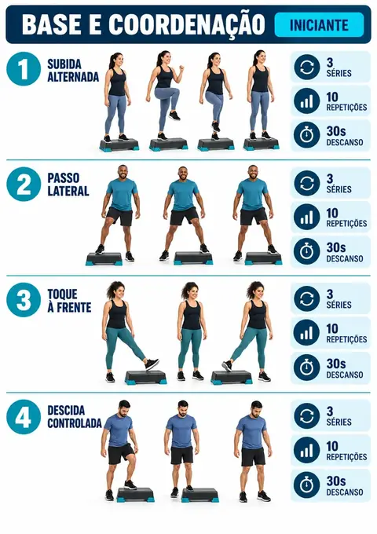
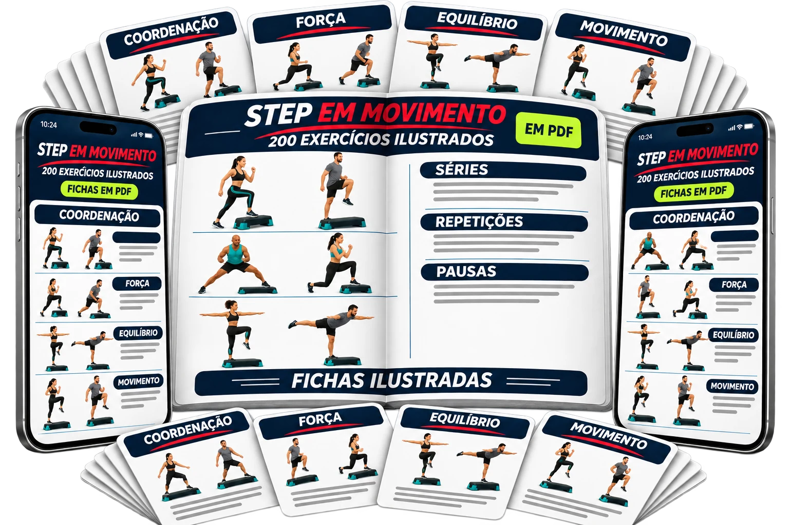
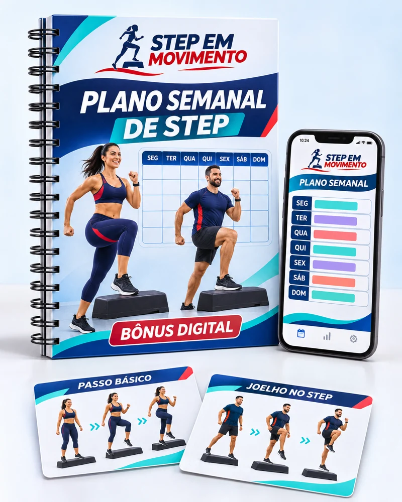
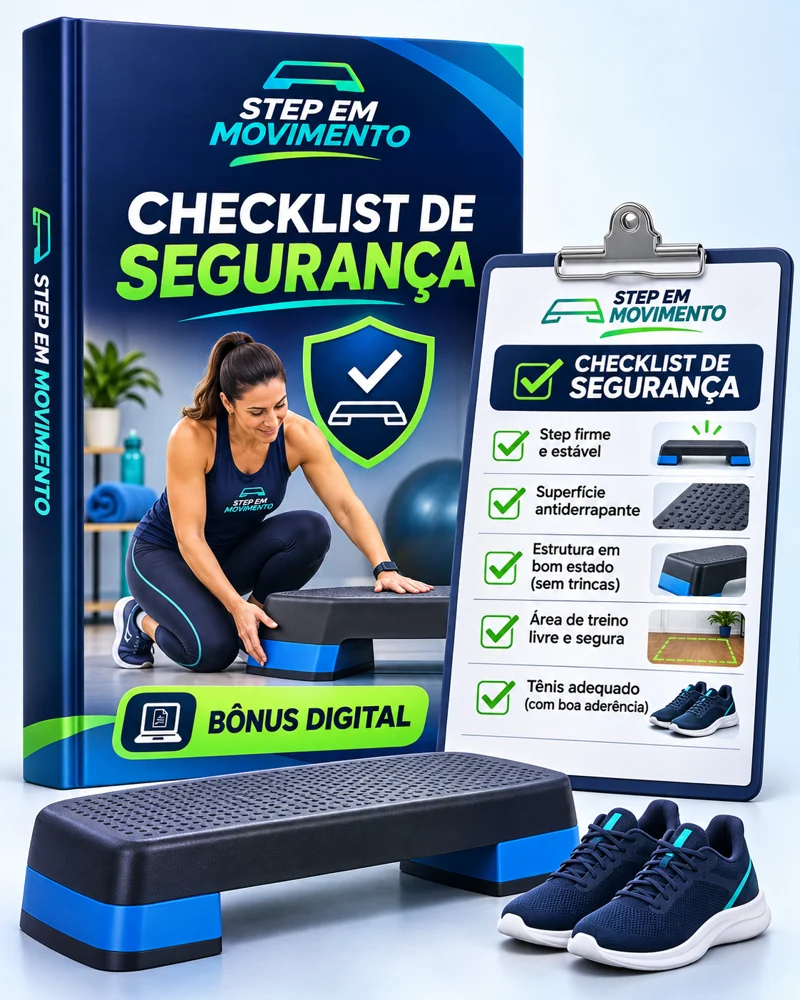
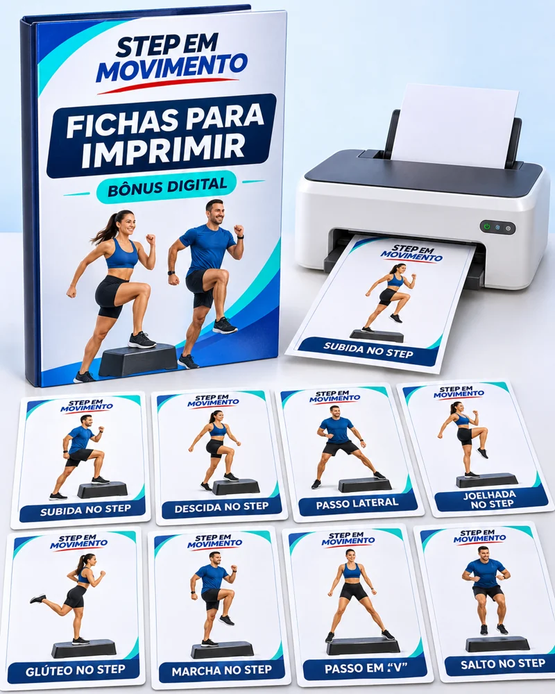
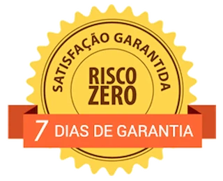

🏋️ STEP EM MOVIMENTO — 200 EXERCÍCIOS EM FICHAS ILUSTRADAS
🔒 Compra 100% Segura e Protegida
200 EXERCÍCIOS DE STEP PARA VARIAR SUAS AULAS SEM MONTAR TUDO DO ZERO.
Fichas Ilustradas de Consulta Rápida em PDF

Tenha 200 exercícios de step em fichas ilustradas para escolher os movimentos pelo nível e objetivo da turma. Consulte séries, repetições e pausas no celular ou imprima para planejar suas aulas.
Acesse o material digital após a confirmação pelo WhatsAppou pelo E-mail
PARA QUEM DÁ AULA DE STEP E PRECISA RENOVAR O REPERTÓRIO
Para instrutores de aulas coletivas, professores de Educação Física e personal trainers que querem agilizar o planejamento e variar os movimentos.
- ✓Para escolher movimentos pelo nível da turma.
- ✓Para variar as sequências de uma aula para outra.
- ✓Para consultar exercícios sem horas de pesquisa.
- ✓Para organizar aulas com objetivos diferentes.
- ✓Para adaptar o repertório aos alunos que você já atende.
- ✓Para ter as fichas no celular ou prontas para imprimir.
Se essa é a sua rotina, o Step em Movimento foi pensado para facilitar o planejamento das suas aulas.
A próxima aula está chegando. Você já sabe quais movimentos vai usar?
Abra as fichas, escolha os exercícios e adapte a sequência à sua turma. Mais repertório à mão para preparar suas aulas com menos tempo de busca.
MENOS TEMPO BUSCANDO. MAIS REPERTÓRIO PARA ENSINAR.
ESCOLHA·ADAPTE·APLIQUE
Fichas visuais em PDF para consultar os exercícios e organizar sua próxima aula de step.
Essas dúvidas aparecem no planejamento da sua aula?
Tenha um material de consulta para escolher movimentos, variar o repertório e adaptar as sequências à turma.
“O que faço na próxima aula?”
Consulte as fichas e selecione os movimentos que combinam com seu objetivo.
ESCOLHA · ADAPTE · APLIQUE“Como adapto para essa turma?”
Escolha os exercícios por nível e ajuste a aplicação à realidade dos alunos.
ESCOLHA · ADAPTE · APLIQUE“Como saio das mesmas sequências?”
Explore 200 exercícios ilustrados para ampliar suas opções de planejamento.
ESCOLHA · ADAPTE · APLIQUE“Preciso imprimir tudo?”
Abra os PDFs no celular ou imprima as fichas que pretende utilizar.
ESCOLHA · ADAPTE · APLIQUEVeja tudo o que você vai receber
⚡ Acesso Imediato
STEP EM MOVIMENTO
200 exercícios ilustrados + 3 bônus para suas aulas
- ✓200 exercícios de step em fichas ilustradas
- ✓Movimentos organizados por nível e objetivo
- ✓Opções para variar as aulas coletivas
- ✓Séries, repetições e pausas para consulta
- ✓Fichas para apoiar a montagem das sequências
- ✓Consulta pelo celular, tablet ou computador
- ✓Arquivos digitais em PDF
- ✓Opção de imprimir para consultar nas aulas
- ✓Bônus: Plano Semanal de Step
- ✓Bônus: Checklist de Segurança
- ✓Bônus: Versão para Impressão
- ✓Pagamento único, sem mensalidade
E NÃO PARA POR AÍ...
VOCÊ AINDA RECEBE
🎁 3 BÔNUS NO PLANO COMPLETO🎁 BÔNUS #01
Plano Semanal de Step

Organize os exercícios ao longo da semana e use o planejamento como apoio para distribuir o repertório das aulas.
Junto com as 200 atividadesINCLUÍDO NO KIT
🎁 BÔNUS #02
Checklist de Segurança

Consulte pontos de atenção sobre o espaço, a plataforma e a preparação antes de aplicar os movimentos.
Junto com as 200 atividadesINCLUÍDO NO KIT
🎁 BÔNUS #03
Versão para Impressão

Tenha uma versão para imprimir e manter as fichas por perto durante o planejamento e as aulas.
Junto com as 200 atividadesINCLUÍDO NO KIT
UMA OFERTA. TODO O MATERIAL.
Seu kit completo de step
200 exercícios ilustrados e os três bônus para planejar e variar suas aulas.
★ 200 EXERCÍCIOS + 3 BÔNUS
TUDO EM UM ÚNICO ACESSO
Kit Completo
Fichas de step para quem planeja e dá aula
- ✓200 exercícios de step ilustrados
- ✓Fichas em PDF por nível e objetivo
- ✓Séries, repetições e pausas para consulta
- ✓Consulta no celular ou no computador
- ✓Fichas prontas para imprimir
- ✓Plano Semanal de Step
- ✓Checklist de Segurança
- ✓Versão para Impressão
- ✓Acesso digital após a confirmação
- ✓Pagamento único, sem mensalidade
R$27,00
Pagamento único · Sem mensalidades
Kit completo com os três bônus incluídos
Quero o Kit Completo por R$ 27,00🔒 Compra protegida · Garantia de 7 dias

GARANTIA DE 7 DIAS
Acesse e conheça todo o material sem risco. Caso entenda que o produto não atende às suas expectativas, solicite o reembolso dentro de 7 dias, conforme as regras da plataforma de pagamento.
Como funciona?
💳
1
Libere seu acesso
Receba o acesso ao material após a confirmação da compra.
🔎
2
Escolha os exercícios
Consulte as fichas pelo nível e objetivo que deseja trabalhar.
🏋️
3
Adapte e aplique
Organize a sequência e ajuste os exercícios à realidade da sua turma.
Perguntas Frequentes
Para quem é o Step em Movimento?+
Para professores de Educação Física, instrutores de aulas coletivas e personal trainers que querem ampliar o repertório de exercícios no step e facilitar o planejamento.
Quantos exercícios estão incluídos?+
O kit completo reúne 200 exercícios de step em fichas ilustradas e três bônus: Plano Semanal de Step, Checklist de Segurança e Versão para Impressão.
É um curso ou um material de consulta?+
É um material digital em PDF com fichas ilustradas para consultar e apoiar o planejamento das suas aulas.
O que aparece nas fichas?+
Você consulta as ilustrações dos movimentos e as informações de séries, repetições e pausas para adaptar a aplicação à sua turma.
Funciona no celular?+
Sim. Você pode abrir os PDFs no celular, no tablet ou no computador. Se preferir, também pode imprimir.
Como recebo o material?+
Após a confirmação do pagamento, siga as instruções de acesso fornecidas pela Wiapy no checkout e na confirmação da compra.
Tem mensalidade?+
Não. O kit completo custa R$ 27,00 em pagamento único.
Vou receber um produto físico?+
Não. O material é digital. As imagens de fichas e capas demonstram a apresentação do produto.
Posso usar com qualquer turma?+
O material apoia o planejamento do profissional. A seleção e a adaptação dos exercícios devem considerar a avaliação, a experiência e as necessidades dos alunos.
E se o material não atender às minhas expectativas?+
Você pode solicitar o reembolso em até 7 dias após a compra, conforme as regras da plataforma de pagamento.
MAIS MOVIMENTO NA AULA. MENOS TEMPO NO PLANEJAMENTO.
Tenha 200 exercícios ilustrados à mão para escolher, adaptar e variar as aulas de step. Abra as fichas no celular ou imprima para consultar quando precisar.